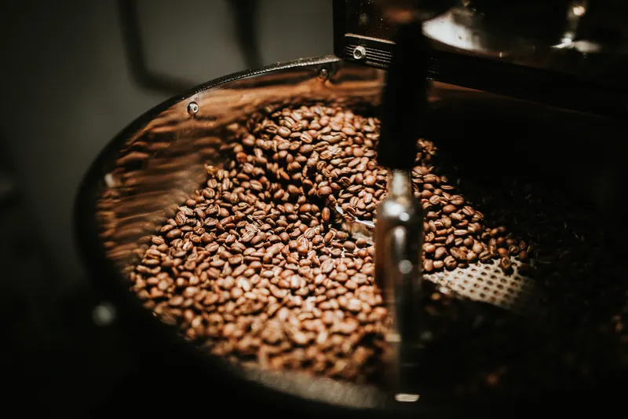
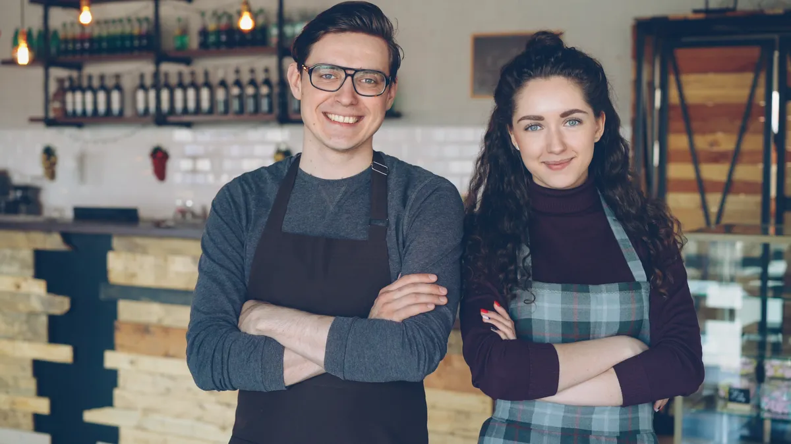
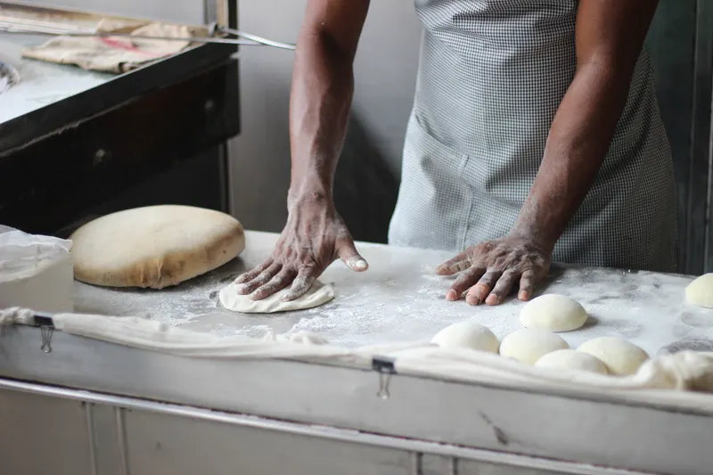
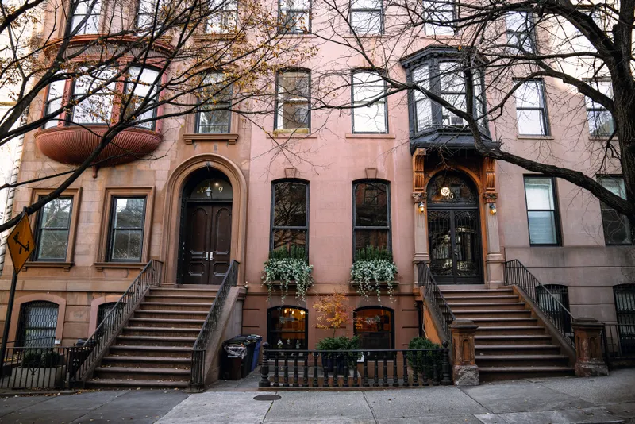
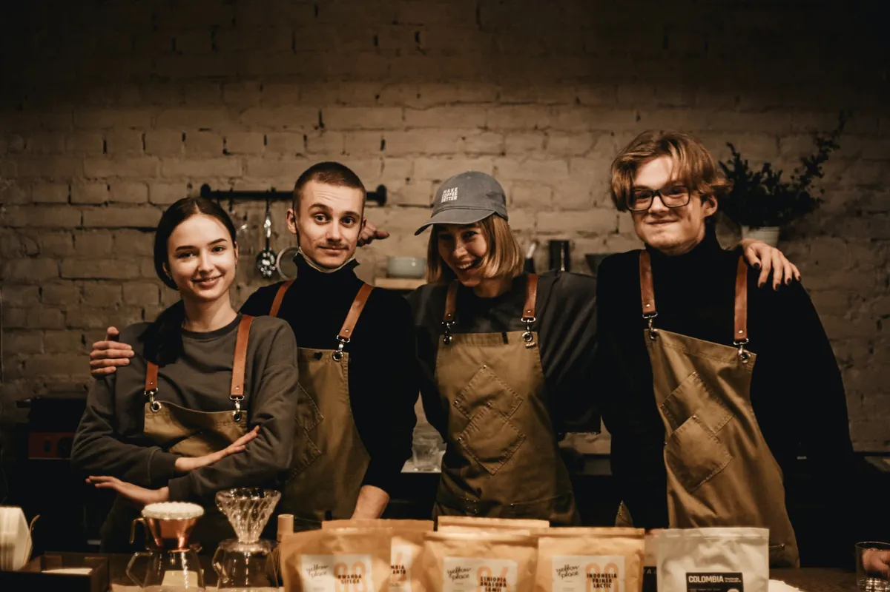

Slow coffee
Theo roasts in small batches every Tuesday and Thursday and buys straight from farms he's visited. If a coffee isn't tasting right, it comes off the bar.
Our story

Maya Okafor had been a pastry chef in Manhattan for eleven years when she walked into a public coffee cupping in Red Hook on a wet Saturday in 2017. She went for the free coffee. She stayed because the man running it, a quietly obsessive roaster from Gothenburg named Theo Lindqvist, was explaining why one Ethiopian lot tasted like peaches and another like black tea. With total sincerity.
They argued about cardamom buns for an hour afterwards. Theo said the Swedish ones were better. Maya said she'd prove him wrong. She brought a batch to the next cupping, and the one after that, and by spring they were planning a place where his coffee and her baking could live under one roof.
It took two years to find it: a shuttered hardware shop on a brownstone street, with a pressed-tin ceiling and a basement just big enough for an oven. Neighbours poked their heads in while the floors were sanded. Mrs. Alvarez from number 220 was the first through the door on opening day, and she still comes in for a cortado every morning at 7:15.
Brew & Co opened in October 2019. We're still small, still baking everything downstairs before dawn, and still arguing about cardamom buns. (Maya won. They're on the menu.)
— Maya & Theo
What we care about

Theo roasts in small batches every Tuesday and Thursday and buys straight from farms he's visited. If a coffee isn't tasting right, it comes off the bar.

Every croissant, bun and loaf is made in our basement kitchen from 5am. No trucks, no freezers, no shortcuts with the butter.

Open mic Fridays, free Saturday cuppings, and a corkboard for lost cats and spare rooms. This is the block's living room. We just make the coffee.
Along the way
Maya and Theo meet at a Saturday cupping in Red Hook. The cardamom bun argument begins.
A pop-up at the Hartwell Street block party sells out of buns in 40 minutes.
The old hardware shop becomes Brew & Co. Mrs. Alvarez orders our very first cortado.
Open Mic Fridays start with three performers and a borrowed amp. Now the list fills up by 7.
A small roaster arrives in the back room, and Saturday cuppings move home.

There are nine of us now: baristas, bakers, and one very patient dishwasher who also runs the open mic sign-up sheet. Come and say hello. We'll probably remember your order by the third visit.